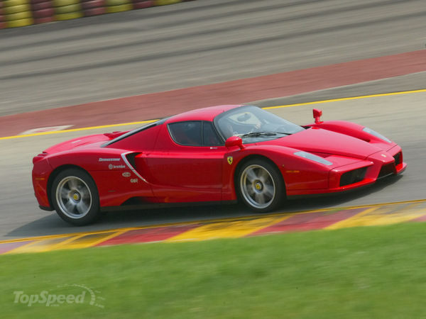
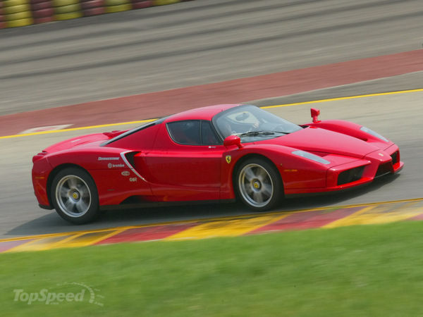
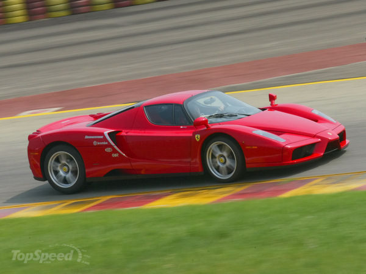

The Enzo Ferrari is a 12 cylinder mid-engine berlinetta sports car named after the company's founder, Enzo Ferrari. It was built in 2002 using Formula One technology, such as a carbon-fibre body, F1-style electrohydraulic shift transmission, and carbon fibre-reinforced silicon carbide (C/SiC) ceramic composite disc brakes. Also used are technologies not allowed in F1 such as active aerodynamics and traction control. After a downforce of 7600 N (1700 lbf) is reached at 300 km/h (186 mph) the rear wing is actuated by computer to maintain that downforce. The Enzo's F140 B V12 engine was the first of a new generation for Ferrari. It is based on the design of the V8 found in Maserati's Quattroporte, using the same basic design and 104 mm (4.1 in) bore spacing. This design will replace the former architectures seen in V12 and V8 engines used in most other contemporary Ferraris. The 2005 F430 is the second Ferrari to get a version of this new powerplant.
Click here to go back to the main page.
